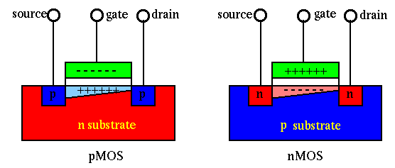

Next: MOSFET Amplifier Up: ch4 Previous: Colpitts Oscillators
A metal-oxide-semiconductor field-effect transistor (MOSFET) has three terminals, source, gate, and drain. In an n-MOSFET (or p-MOSFET), both the source S and drain D are N-type (or P-type) and the substrate between them is P-type (or N-type). The gate and the P-type substrate is insulated by a thin layer of silicon dioxide (). Due to this insulation, there is no gate current to either the source or drain.

Typically the polarities of the voltages applied to the MOS transistor are such that
| and | (150) |
The MOS transistor can be used in either analog circuits or as a switch in binary logic circuit:
| (151) |
More acturately, the drain current and the gate voltage can be modeled by
| (152) |
The current is affected by voltage as well as . It can therefore considered as a function of both and plotted below (similar to a bipolar transistor ):
This function can be divided into three different regions:
| (153) |
 is a threshold voltage,
is a threshold voltage,  , i.e., no current
flows through S and D (due to the two back-to-back PN-junctions).
, i.e., no current
flows through S and D (due to the two back-to-back PN-junctions).
| and | (154) |
, some electrons in the P-type
substrate (minority carriers) are pulled toward the gate to
form an inversion layer close to the gate to form an N-type
channel with certain resistance between S and D.
increases linearly as increases, with a coefficient
(Ohm's law), and nonlinearly as
increases (to pull more electrons toward the gate to enhance the
conductivity of the n-channel). Note that as
, the
inversion layer is narrower at the D end than the S end.
but |
(155) |
, but at the D
end is lower than . On the one hand, the increased voltage
tends to increase , on the other hand, the reduced
makes the inversion layer at the D end narrow to the extend
that it is nearly closed (pinch-off). As the result, higher
voltage does not cause more current (saturated), and
it is only affected by .
In the plot of vs , the triode region and the saturation region are separated by the curve of .
Example: Assume .
independent of .
Example: Assume
and , and both MOSFETs in the
following circuit are in the saturation region. Find output voltage  .
.
Since both MOSFETs are in saturation region with the same which is determined only by but independent of , their must be the same. The upper MOSFET must have the same as the lower one , i.e., the output voltage has to be .
Comparison between BJT and FET
 . But as MOSFET's gate is
insulated from the channel (
), it draws virtually
no input current and therefore its input resistance is infinity in theory.
. But as MOSFET's gate is
insulated from the channel (
), it draws virtually
no input current and therefore its input resistance is infinity in theory.
 or ) controlled, but MOSFET is voltage
() controlled. Consequently, the power consumption of MOSFETs
is lower than BJTs.
or ) controlled, but MOSFET is voltage
() controlled. Consequently, the power consumption of MOSFETs
is lower than BJTs.
The BJT and FET can be compared with the old technology of vacuum tube. Although the specific physics of each of these devices is quite different from others, the working principles of these devices are essentially the same. In all three devices, a small AC input voltage (signal) is applied to the input terminal of the device (base, gate, or grid) to control the current that flows through the device (from collector, drain, or plate to emitter, source, or cathode, respectively), causing a much amplified voltage to appear at the output terminal (collector, drain, or plate) of the device.